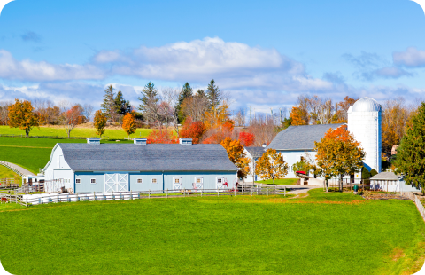
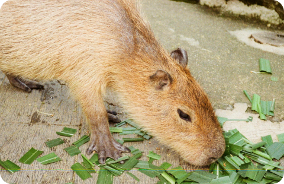
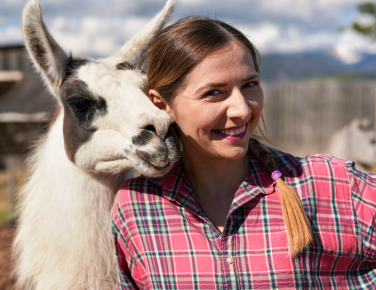
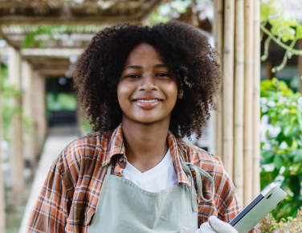
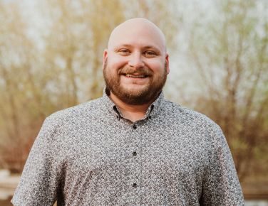

Capybara Connection was created as a welcoming space to slow down and connect with animals. In a calm, open farm setting, guests can pause, breathe, and enjoy meaningful interactions with gentle, curious capybaras.
Our facility is home to rescued capybaras along with goats, sheep, and rabbits. Each animal is cared for in a safe, enriched environment that supports their wellbeing and natural behaviors.
As a nonprofit, we rely on community support to continue providing high-quality animal care and thoughtful, personal experiences for every guest.

Every visit to Capybara Connection is designed to feel relaxed, personal, and engaging. Whether you choose a private encounter or time in Capybara Commons, you’ll have the opportunity to connect with our animals in a calm, welcoming environment.
Our private encounters offer guided, small-group interaction with capybaras, while our open farm area provides a warm, hands-on experience with capybaras and other friendly animals. Sensory-friendly hours on Tuesdays offer a quieter, lower-stimulation option.
We hope each guest leaves feeling refreshed, inspired, and more connected to the animals.

Emily has always been passionate about animal rescue and hands-on care. She oversees daily enrichment and ensures every capybara, goat, sheep, and rabbit receives thoughtful, individualized attention.
Fun fact: At home, Emily has a pet llama, named Georgia. She also has two rescue dogs who love joining her on weekend hiking adventures.

Sofia loves creating welcoming, calm experiences for every visitor who walks into Capybara Connection. She helps guide private encounters and enjoys sharing the unique personalities of each capybara.
Fun fact: Sofia has a house rabbit of her own and enjoys baking homemade treats (for both humans and animals).

Daniel works closely with the animals each day, focusing on habitat upkeep and enrichment. He’s especially known for his patience and for building strong bonds with the capybaras. Daniel also oversees Capybara Connection’s amazing group of volunteers.
Fun fact: Daniel has a bearded dragon at home and spends his free time woodworking and building custom furniture.